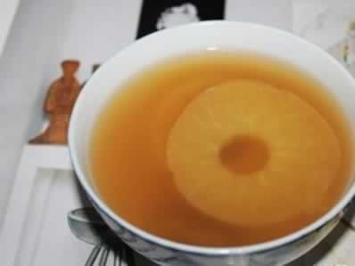

爱食酸的孕妇要注意什么？
有些准妈妈喜欢吃酸味的食物，酸味能刺激胃液分泌，提高消化酶的活性，促进胃蠕动，有利于食物的消化和各种营养素的吸收。所以怀孕后吃酸味的食物是有利于胎儿和母体健康的。
新鲜水果含有丰富的维生素C，维生素C可以增强母体的抵抗力，准妈妈可以选用西红柿、苹果、橘子、草莓、葡萄、酸枣、话梅等，或者选择在食物中放少量的醋、西红柿酱，增加酸味。酸奶富含钙、优质蛋白质、多种维生素和碳水化合物，能帮助人体吸收营养，排泄有毒物质，还能帮助准妈妈增强食欲。
有些准妈妈经常食用各种腌菜、泡菜，提醒妈妈们腌菜类酸味食物摄入过多会对自己和胎儿的健康与发育产生不好的影响。因为大多数腌菜和酸菜中都存在亚硝基化合物，这类物质有较强的致癌性，可以通过胎盘使子宫发生肿瘤和诱发胎儿畸形。此外，山楂也不适宜孕妇食用，因为山楂对孕妇子宫有收缩作用。孕妇食用较多的山楂制品，会刺激子宫收缩，甚至造成流产。
所以，并非酸味食物就一定是好的食物，建议准妈妈们尽量选择营养的有酸味食物，如新鲜水果和酸奶等营养食品。
本周推荐尝试食谱1：
蜜枣苹果汁
推荐理由：苹果富含维生素、矿物质和微量元素，可增强母体免疫力，也能令准妈妈皮肤红润光泽。
食谱原料：
蜜枣50克，苹果1个。
制作方法：
1、将蜜枣表面洗净，剥除外皮、去核，切片备用；
2、将苹果洗净，削去皮、去核后也切片；
3、将处理好的蜜枣与苹果交错放入榨汁机内，榨成汁即可。
本周推荐尝试食谱2：
草莓香蕉卷
推荐理由：草莓酸甜可口，结合香蕉可促进肠胃蠕动，对预防孕期便秘很有效。
食谱原料：
草莓香蕉卷
推荐理由：草莓酸甜可口，结合香蕉可促进肠胃蠕动，对预防孕期便秘很有效。
食谱原料：
1个面粉做的薄饼，2汤匙的花生酱，2汤匙的草莓果冻，1只脱皮香蕉
制作方法：
首先先将花生酱涂在面粉薄饼上，然后在花生酱上放上草莓果冻再加花生酱。然后在放上一层切好片的香蕉，再卷起来，切成一段段方便进食。制作方法：